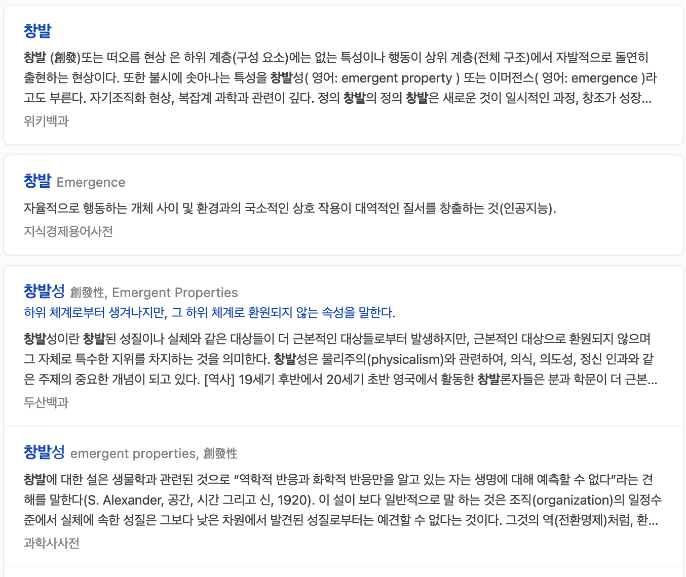

인간이라는 유기체가 예측 불가능하고 일어나는 일들이 너무 많은 변수들이 존재한다면 과연 우리의 현장실무가 과연 이론대로 일어나고 있다고 할수있을까요?
인간을 구성하는 하위계통은 너무나 많고, 하위계통은 독립적으로 존재하는 것이 아닌 다른 하위계통과 끊임없이 지속적으로 상호작용하며 인간이라는 계 하나를 유지합니다.
통증으로 예를 들자면, 통증은 조직의 손상 정도로 생기지 않으며 통증의 촤종 판단은 뇌에서 만들어 내는 것입니다. 그리고 뇌는 감정, 스트레스, 사회적인 문제, 동기부여, 걱정, 영양,
수면상태 등 다양한 하위분야로 부터 영향을 받기 때문에 통증이 무엇인지 판단하기 어렵습니다.
그렇다면 신경생리학 이론들, 뇌과학 이론들, 생리학 이론들에 기반한 우리의 트레이닝이 과연 실재한다고 할 수 있을까?에 대한 자의식에 빠질 수 있습니다.
Frans bosch 는 하위분야에 대한 이론들은 전체에서 어떻게 일어나는지에 대한 설명이 필요하다고 합니다.
물론 많은 이론들을 공부 해야하는것은 맞습니다. 하지만 이론은 과학이 아니라는 점을 명심 해야합니다. 어떠한 이론도 모든 현상을 설명 할 수 없으며, 틀린 이론마저 매우 많습니다.
뿐만 아니라, 현장에서 하는 트레이닝의 모든 이론적 근거를 알지도 못합니다. 무엇이 일어나고 있는지 단지 추측 할 뿐이며 맞다는 보장조차 없습니다.
우리가 실무에서 하는 모든 것들은 계에 변화를 만들어내는 하나의 조절변수 혹은 질서변수 그 이상 그 이하도 아니며, 그것에 영향을 받는 계가 있을 뿐입니다.
근거기반치료, 근거기반운동 이라는 단어들을 사용하는 것은 근거들이 틀리지 않았다는 것을 전제로 하는 운동입니다.
모든 근거들이 틀렸고 확인 불가능하며, 일어나지 않는다는 것이 아닙니다. 우리는 모든 이론을 알지 못하며, 죽을 때 까지 알 수 없습니다.
이론을 공부하는 것도 좋지만 테크닉과 기술을 공부하는 것 또한 중요하다고 생각합니다.
이론은 그저 좋을대로 붙였다가, 좋을대로 떼내고, 버리고 하는 소모품 입니다. 많은 기법들 운동중재, 신경통증 중재법, 근력검사 및 중재, 가동범위 검사 및 중재 등 많은
테크닉과 기술을 배우는 것 또한 중요하다고 생각이 듭니다.
기술은 이론의 정수입니다.